◀︎ Selected Work
04 — 2026
Visual
Symbol Book
A book website — I designed the layout and drew everything in it.
To make graphics transformations more intuitive (and because I’m not a big reader), I built a game into it that helps me remember them.
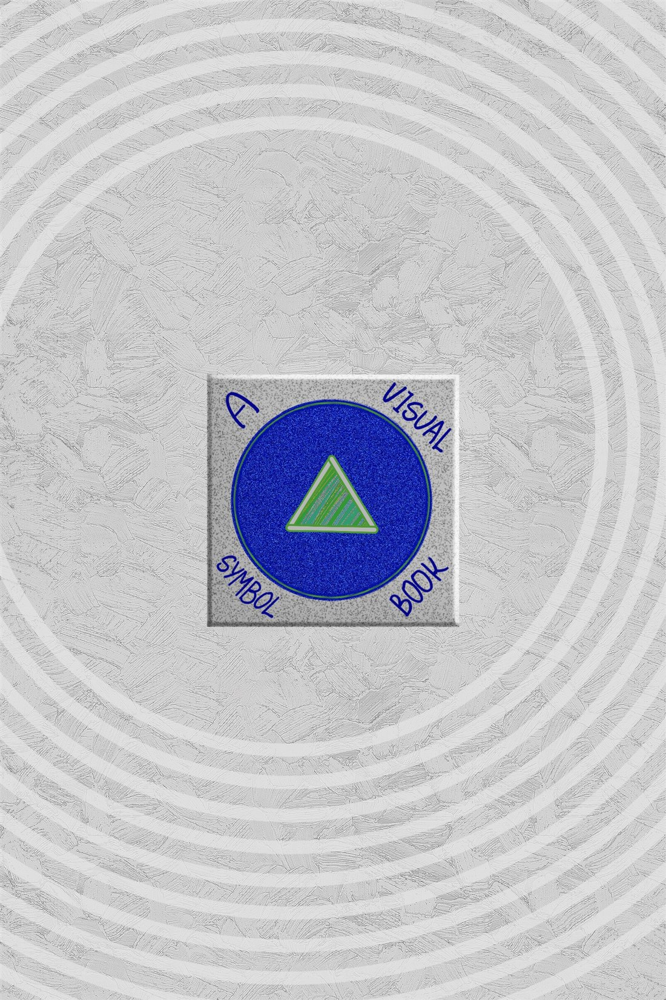
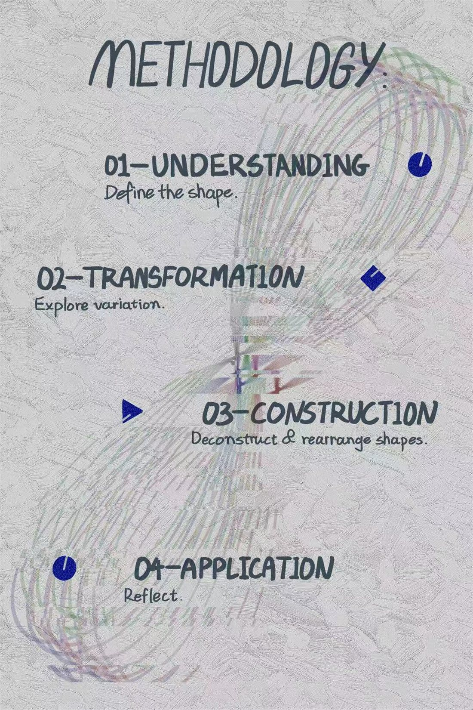
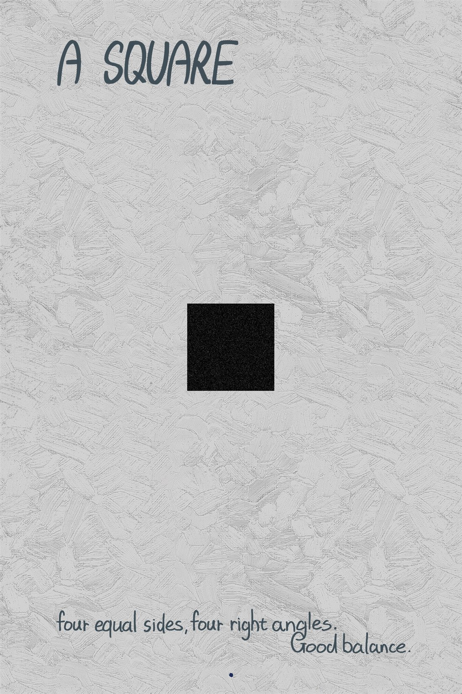
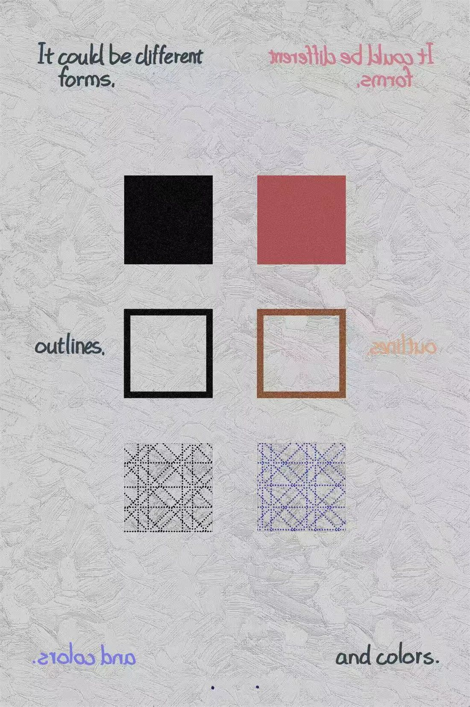
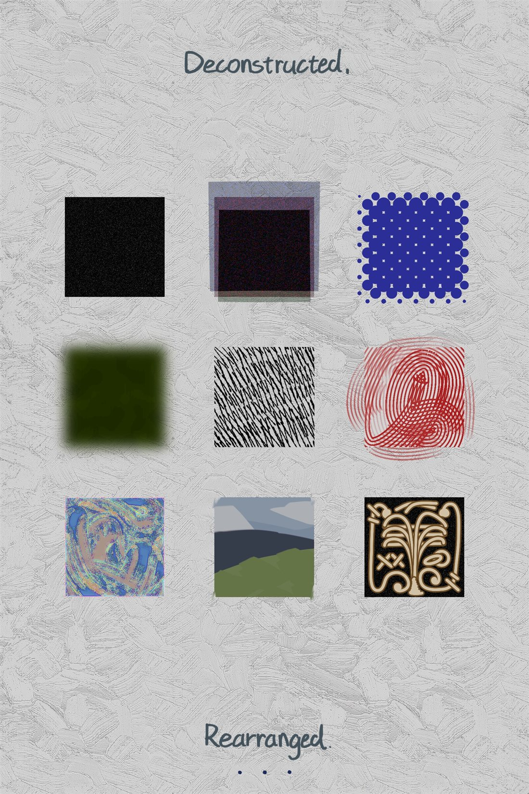
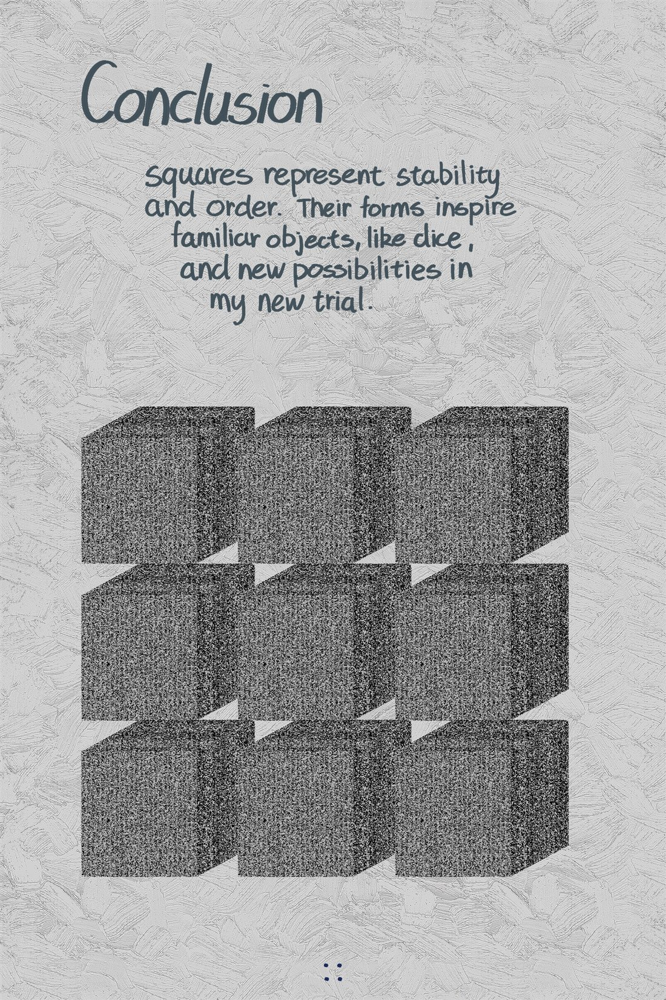
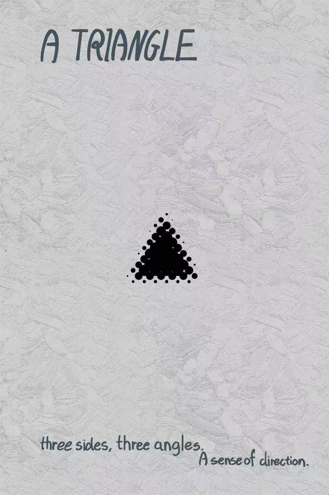
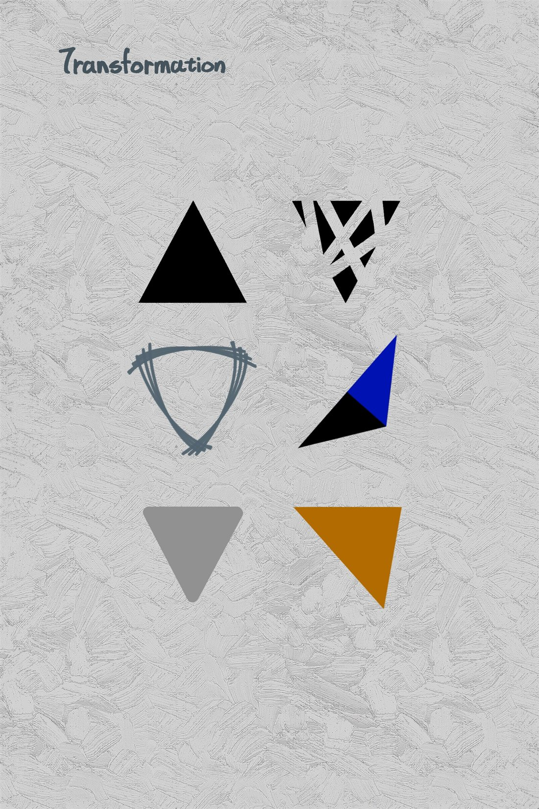
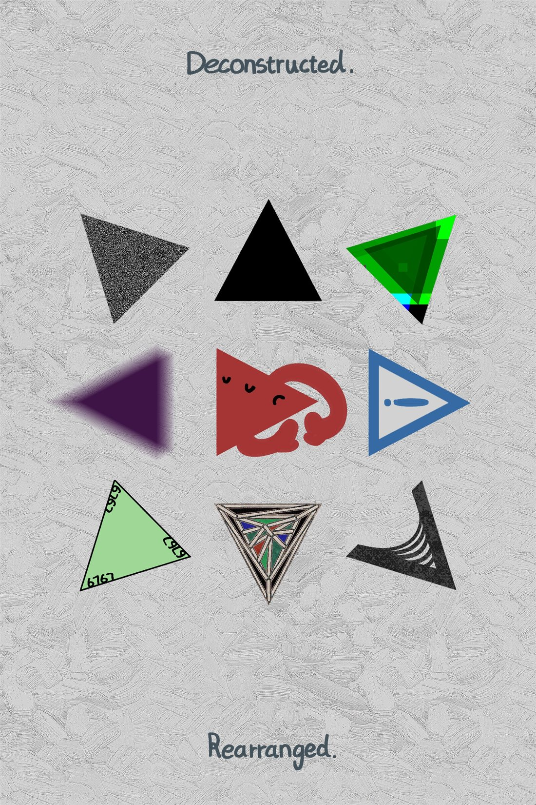
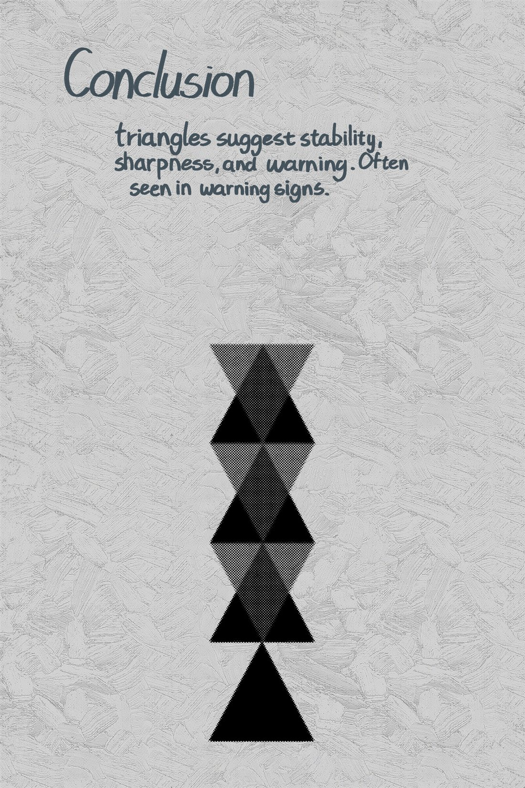
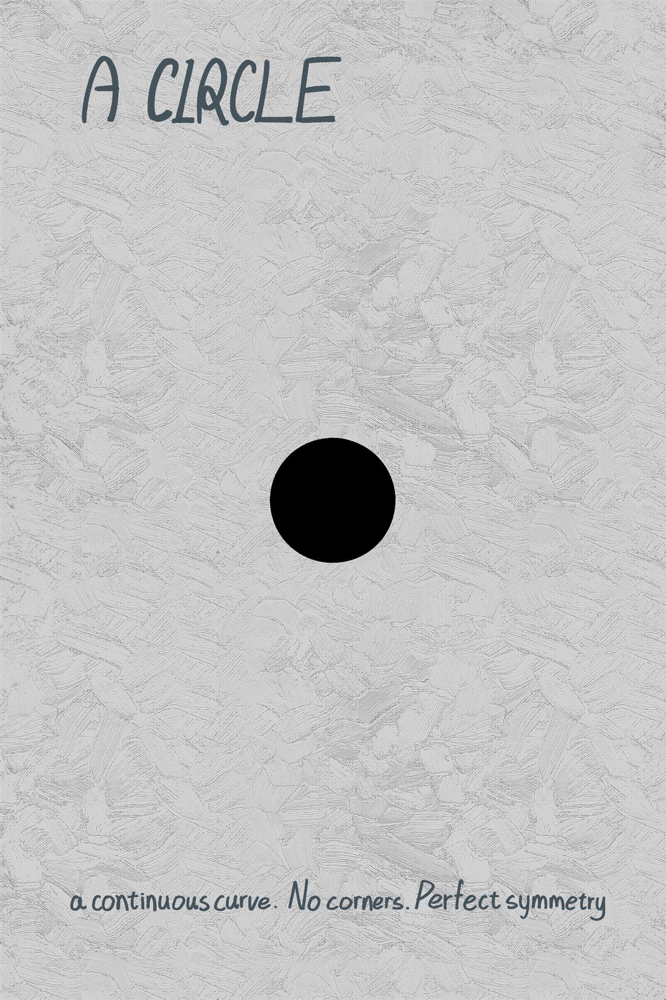
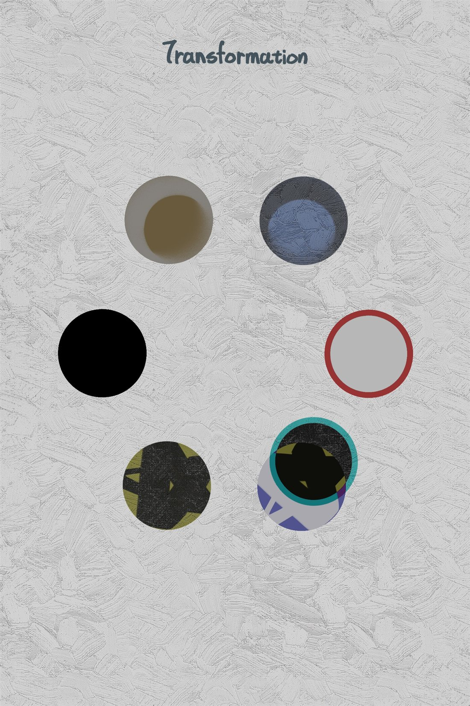
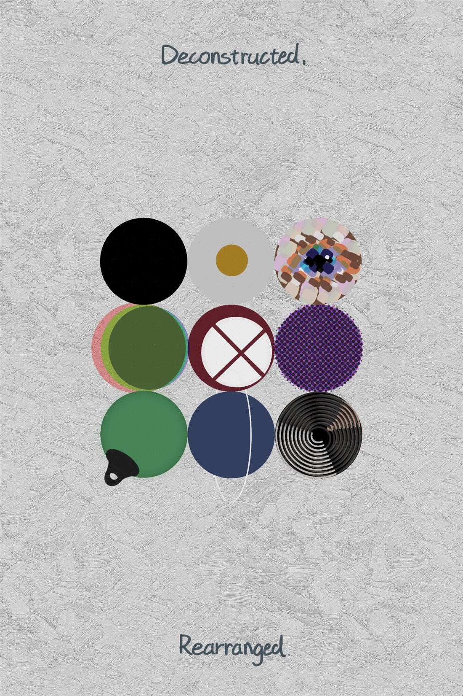
Info